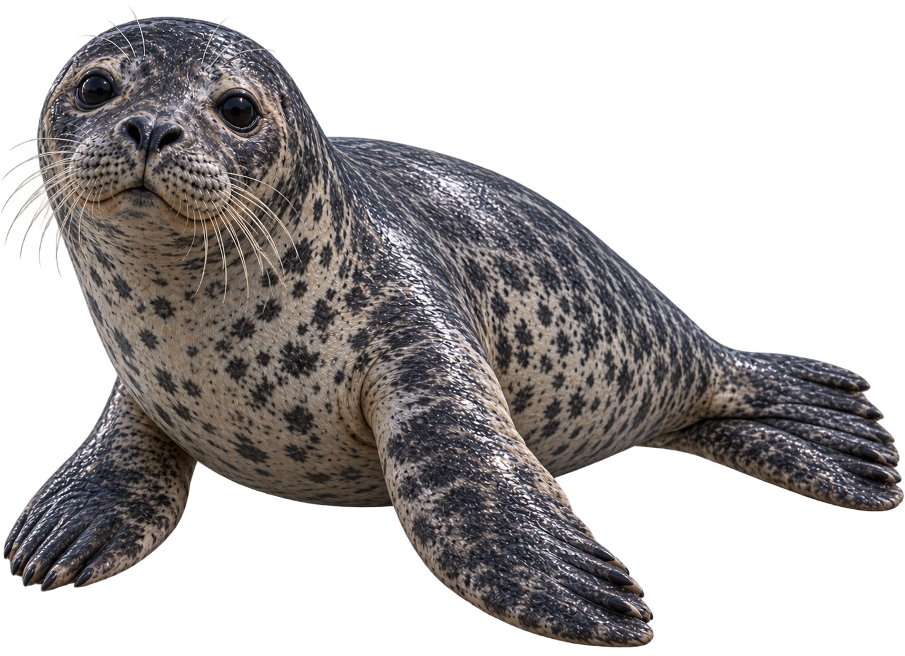
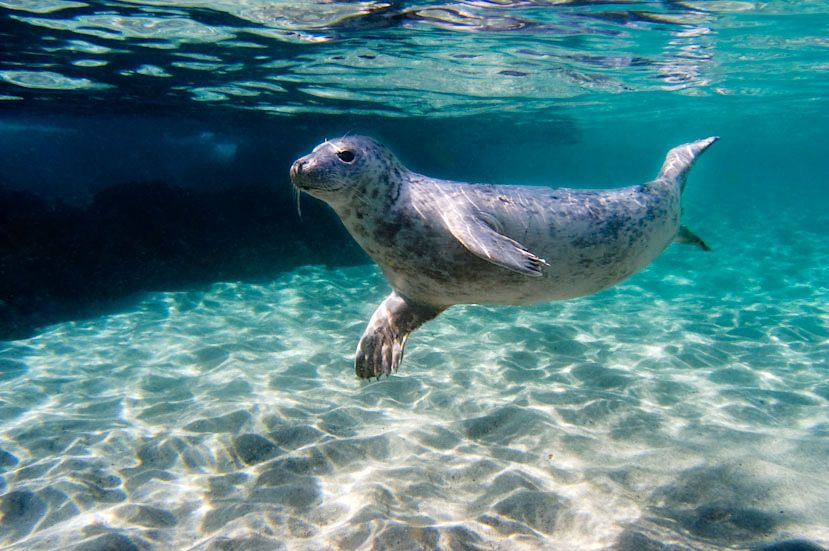
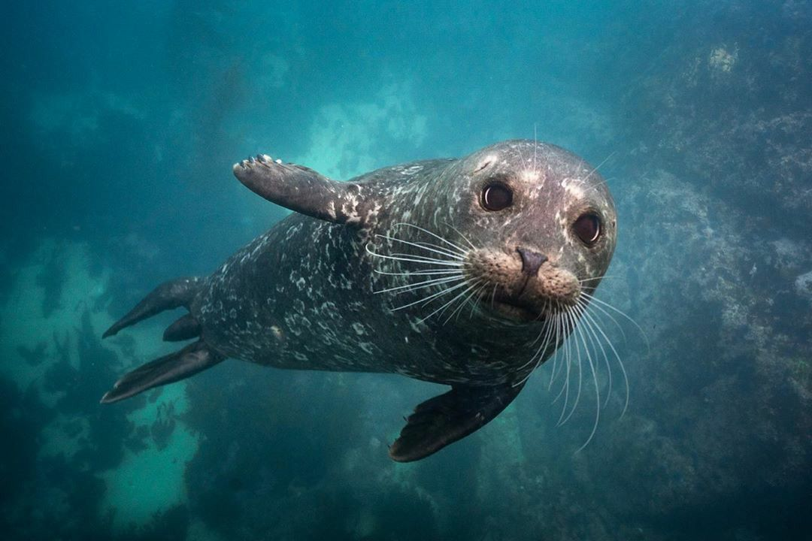
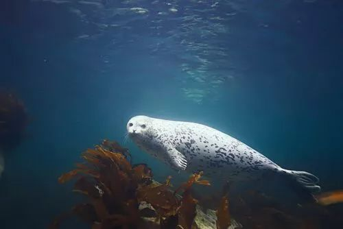

Foca
Phocidae
A foca é um mamífero marinho conhecido por seu corpo adaptado à vida na água, suas nadadeiras e sua camada de gordura, que ajuda a manter o corpo aquecido. É uma excelente nadadora e passa grande parte da vida no oceano.

Curiosidades
Alimentação
Alimentam-se principalmente de peixes, lulas, crustáceos e outros animais marinhos.
Tempo de vida
Dependendo da espécie, as focas podem viver aproximadamente 20 a 35 anos.
Mergulho
As focas conseguem permanecer submersas por vários minutos enquanto procuram alimento.
Nascimento
As fêmeas geralmente dão à luz um filhote por vez. O filhote recebe leite materno e permanece com a mãe durante o período inicial de desenvolvimento.
Importantes para o ecossistema
Fazem parte da cadeia alimentar marinha e ajudam a controlar as populações de suas presas.
Habitat
São encontradas principalmente em regiões costeiras e águas frias, embora algumas espécies vivam em áreas mais quentes.


Você Sabia?
As focas conseguem fechar as narinas durante os mergulhos, impedindo a entrada de água enquanto permanecem debaixo do mar.
